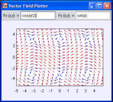

[The Wave Function Plotter shows a wave function u(x,t) which varies in space and time.]
A quantity, such as wind velocity or a gravitational force, that has a direction and a magnitude at every point in space is a vector field. The Vector Field Plotter model displays a vector field that is defined by two analytic expressions Fx(x,y) and Fy(x,y). The field is represented by an array of colored arrows arrows of unit length. We have found that using color rather than arrow length to represent a vector field's strength produces a more effective representation of magnitude over a wider range of values. Examine the model and remove the Length property input in the inspector and run the model again. The vectors overlap because the default arrow length is the vector magnitude. The Color Component property in the appearance section of the inspector allows us to control the mapping of field strength to color. The default color component selects a color based on the field's magnitude, but we can provide our own map. For example, setting the Color Component property to 1 uses the color that correspond to 1 for all arrows.
The following EJS models demonstrate how to display two-dimensional scalar and vector fields using elements on the fields and plots tab on the EJS 2D Drawables palette.
The Vector Field Plotter model was created by Wolfgang Christian and Francisco Esquembre using the Easy Java Simulations (EJS) authoring and modeling tool. You can examine and modify a compiled EJS model if you run the model (double click on the model's jar file), right-click within a plot, and select "Open Ejs Model" from the pop-up menu. You must, of course, have EJS installed on your computer. Information about Ejs is available at: <http://www.um.es/fem/Ejs/> and in the OSP ComPADRE collection <http://www.compadre.org/OSP/>.